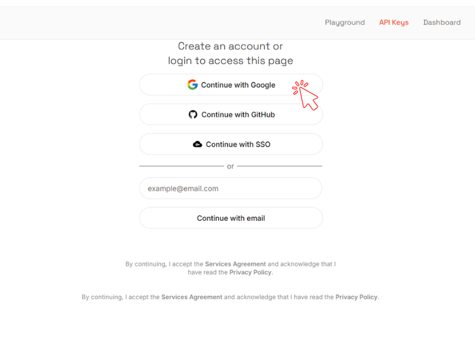
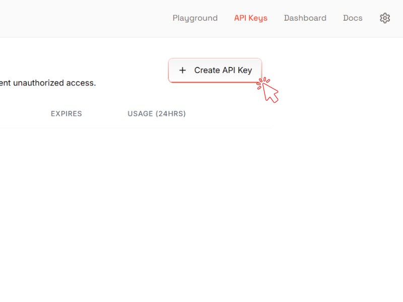
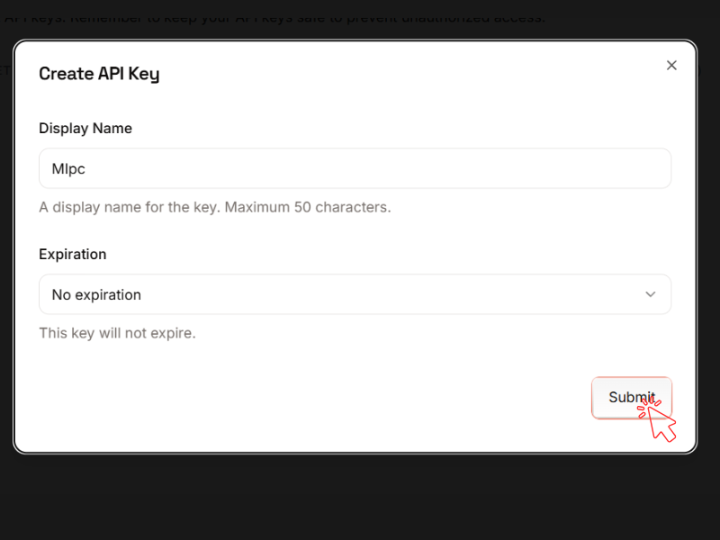
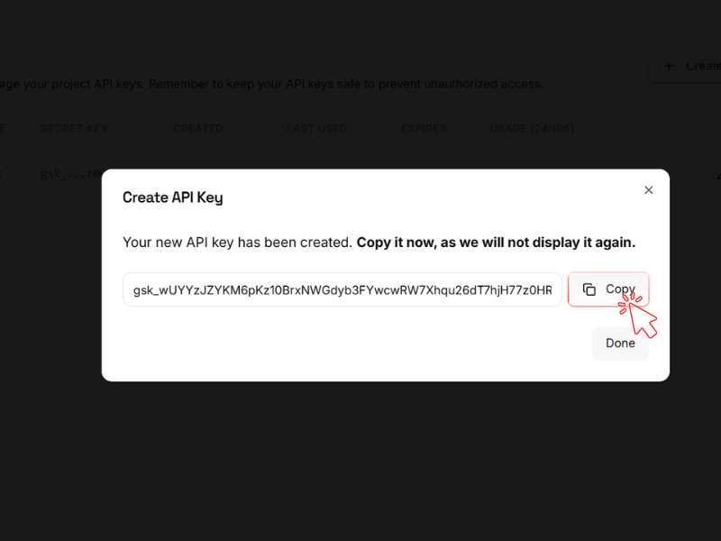
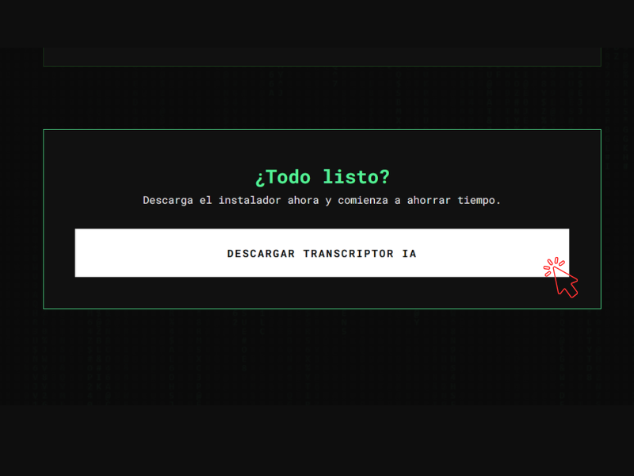
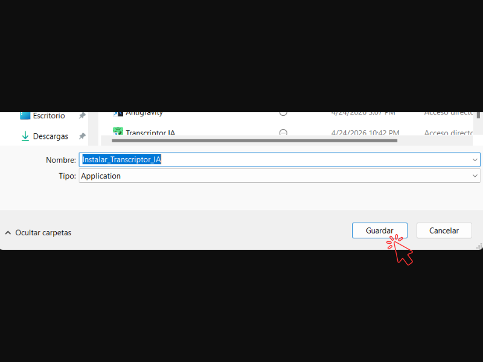
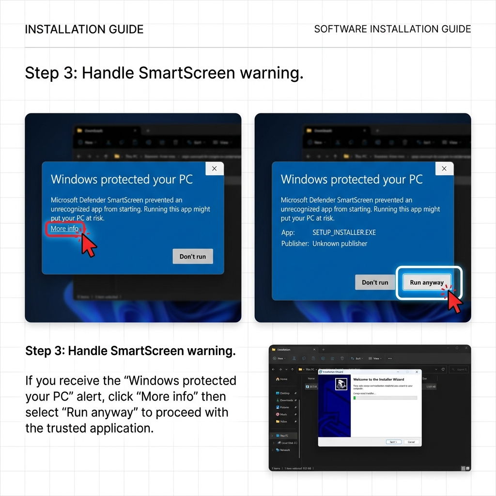
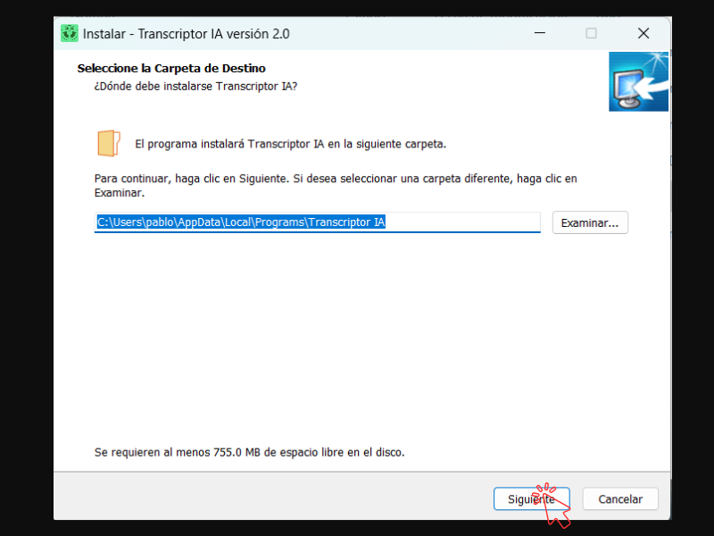
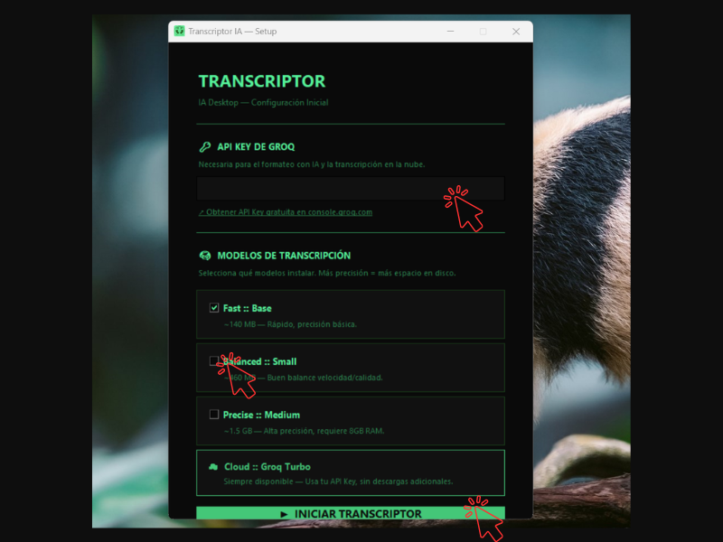
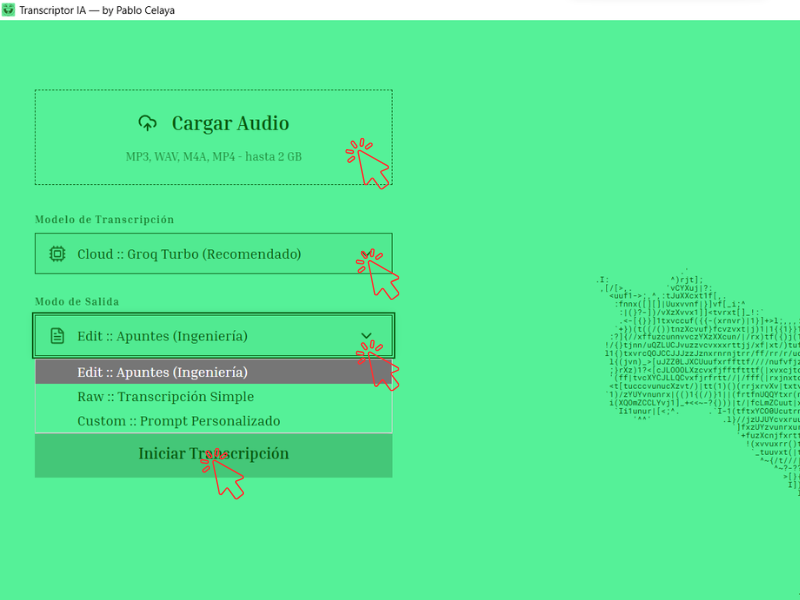

Sigue estos pasos detallados para configurar y empezar a usar la herramienta como un profesional.
Para que la Inteligencia Artificial trabaje a máxima velocidad, necesitamos una "llave" (API Key) gratuita de Groq.




Ahora vamos a traer el programa a tu computadora.


Una vez que abras el instalador descargado:



¡Todo listo! El proceso es muy sencillo:
